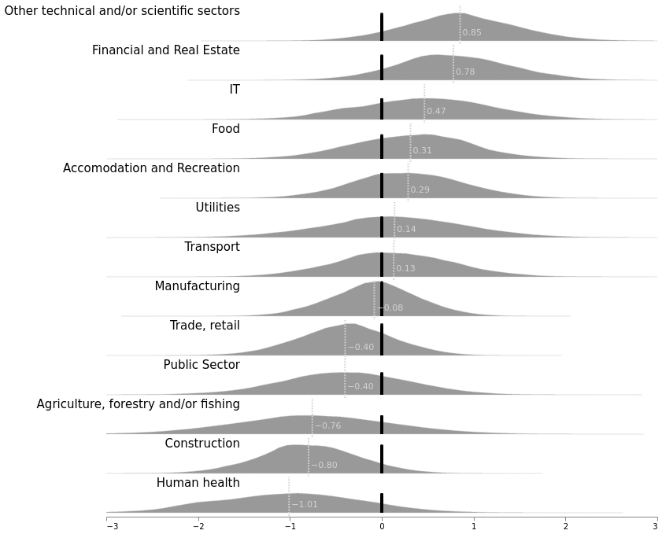
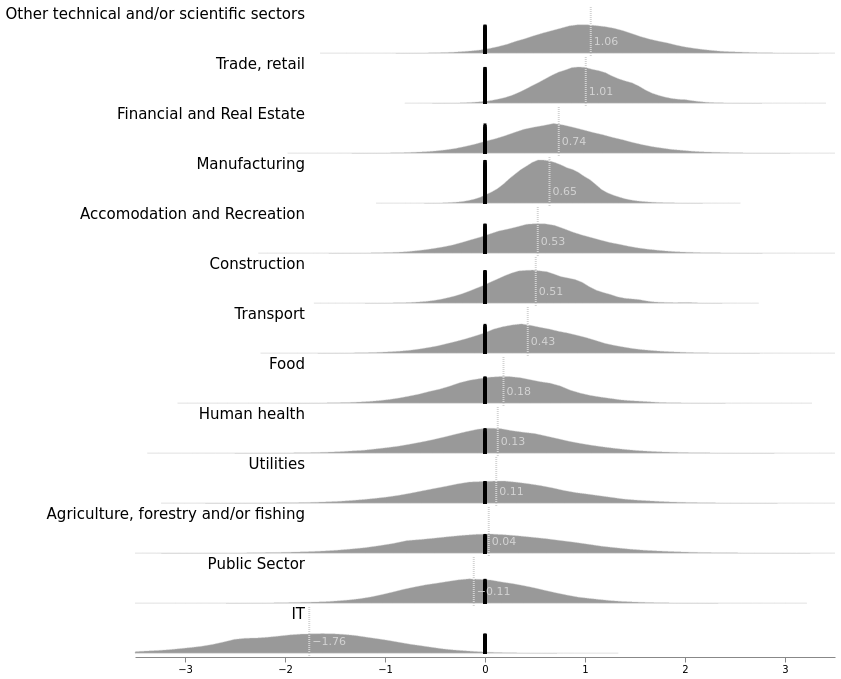
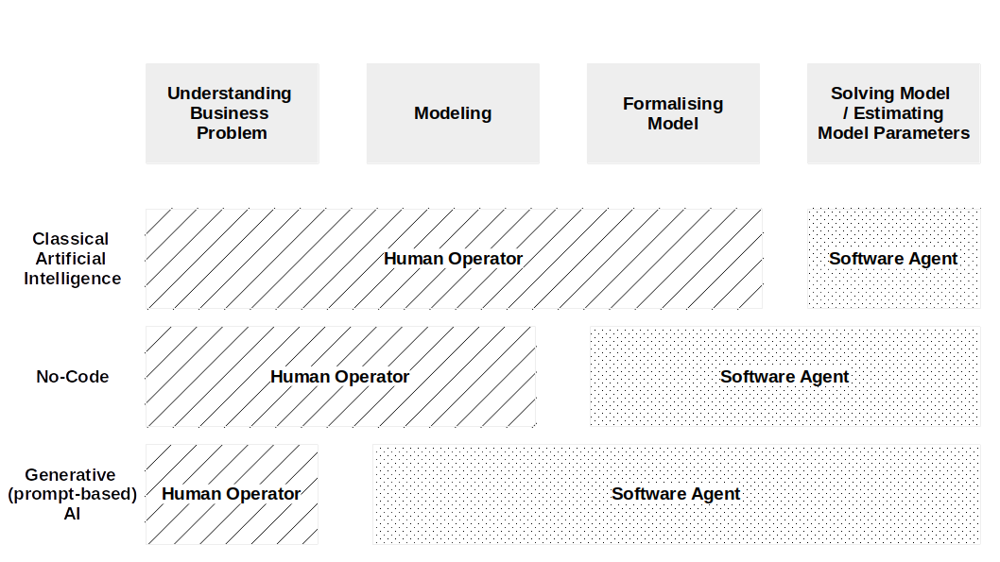
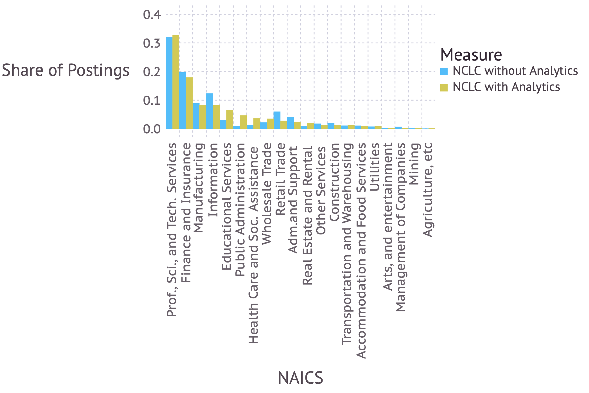
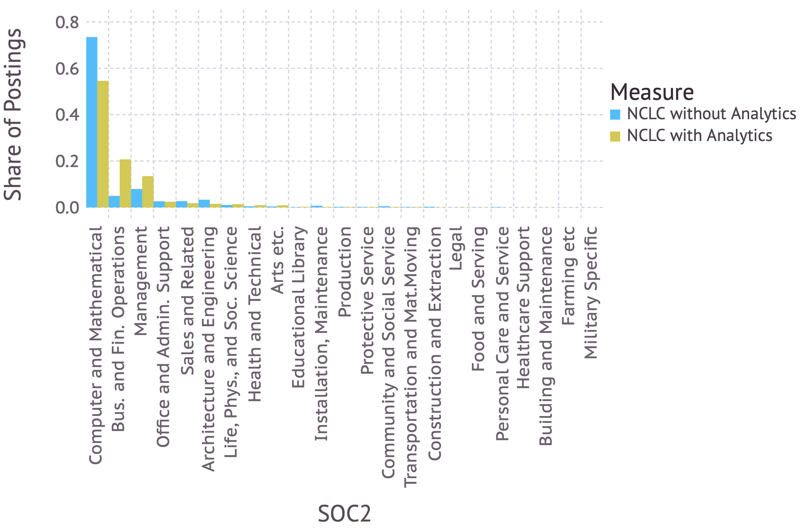

Three Essays on Technology Adoption in Firms
Charles Hoffreumon
October 6, 2025
In this Presentation
- How pervasive are digital technologies in determined countries?
- Should governments and education institutions invest in training a few very qualified AI experts or a lot of AI-savy IT professionals?
- Do I need to be an expert to keep my job? Will AI adoption mean that only geeks will still have jobs in the future?
But first: Is Artificial Intelligence Different from Previous General Purpose Technologies?
NOT from my research, this is just to set the stage
- General Purpose Technologies in a nutshell
- Is AI a General Purpose Technology?
- How is AI different?
In this Presentation
- How pervasive are digital technologies in determined countries?
- Should governments and education institutions invest in training a few very qualified AI experts or a lot of AI-savy IT professionals?
- Do I need to be an expert to keep my job? Will AI adoption mean that only geeks will still have jobs in the future?
How do we know how popular technologies are?
- It is not that easy.
- Reliance on surveys by academics, polling institutes, or public entities.
- Surveys have drawbacks.


How does Technology Diffuse?
Generally, in S-shaped function.
Formally, we can use the Generalised Logistic Function: \[Y(t) = \frac{K}{(C+Qe^{-Bt})^{\frac{1}{\nu}}}\]
Our paper (Hoffreumon and Labhard, 2021) proposes a way to estimate the parameters to forecast or nowcast it using Bayesian Hierarchical Models.
Our proposed way of estimating
- Simple model with only countries and technology "effects"
- We infer parameters for unknown countries or unknown technologies using hierarchical priors
- It works surprisingly well for such a simple model

The Technique Proposed has the Property to Quantify the Uncertainty of the Forecast

In this Presentation
- How pervasive are digital technologies in determined countries?
- Should governments and education institutions invest in training a few very qualified AI experts or a lot of AI-savy IT professionals?
- Do I need to be an expert to keep my job? Will AI adoption mean that only geeks will still have jobs in the future?
How do firms acquire artificial intelligence software?
They buy it...
- Suppliers develop AI solutions and sell them to firms that integrate it to their systems.
- It is important to have a few highly skilled workers to produce the systems that will be distributed.
... and/or they make it
- Every firm develop their own AI software tailor-made for their specific use case.
- It is important to train a large number of professionals able to create new AI systems.
The data
- Surveys for the DG CONNECT.
- Several thousand respondents across Europe and Sectors.
- Data from 2020 (January-April).
We find that the industry the firm is in matters a lot.


The answer to the question is therefore complex
- In general, AI knowledge needs to be diffused (because of complementarity and demand of some sectors).
- Need more exploration of the reason why some firms prefer some sourcing strategy.
- There are some market dynamics.
- The data only allows for a static view of the problem.
In this Presentation
- How pervasive are digital technologies in determined countries?
- Should governments and education institutions invest in training a few very qualified AI experts or a lot of AI-savy IT professionals?
- Do I need to be an expert to keep my job? Will AI adoption mean that only geeks will still have jobs in the future?
Two Three ways to deliver AI
"Programmatic" AI

No-code, Low-code AI
Large Language Models
More in details
Impacts of No-code, Low-code AI on employment
- Is No-code, Low-code AI different from programmatic AI for the worker?
- Who benefits from No-code, Low-code AI?
- What impact on the demand for labour?
We use a large dataset to answer those questions
- 48.590.361 online job postings from the US
- Info about the profile of the job as well as the advertised wage.
- Bias towards white-collar jobs (but likely not an issue considering the questions)
No-code, Low-code is very sector and activity specific

